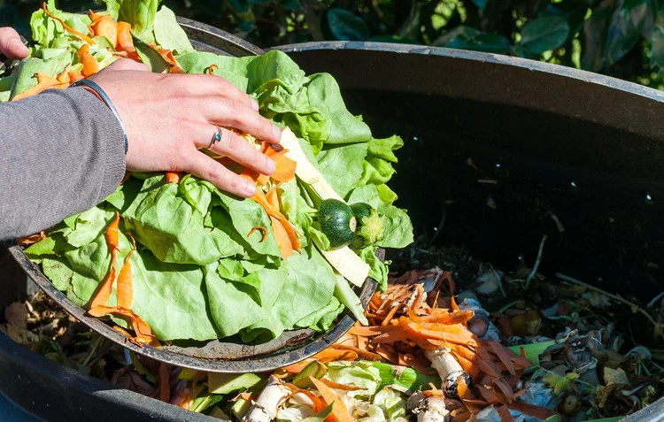

🌍 Composting & The Sustainable Development Goals (SDGs)
What are the SDGs?
The Sustainable Development Goals (SDGs) are 17 global goals created by the United Nations (UN) to address major global challenges like poverty, climate change, and resource sustainability. These goals act as a blueprint to create a better, more sustainable world by 2030.
📌 Why Composting is Important for the SDGs
Composting directly supports several SDGs by reducing food waste, improving soil health, and cutting greenhouse gas emissions. Let's explore how:
♻️ SDG 12: Responsible Consumption & Production
- ✅ Reduces food waste by keeping organic matter out of landfills.
- ✅ Encourages individuals and businesses to rethink how they dispose of food scraps.
- ✅ Supports circular economies by turning waste into a valuable resource.
🌱 SDG 15: Life on Land
- ✅ Composting improves soil health, helping plants and crops grow stronger.
- ✅ Prevents desertification by restoring nutrients to the earth.
- ✅ Reduces reliance on chemical fertilizers, which harm ecosystems.
🌎 SDG 13: Climate Action
- ✅ Composting lowers methane emissions, which contribute to global warming.
- ✅ Helps communities adapt to climate change by promoting sustainable agriculture.
- ✅ Reduces landfill waste, leading to less pollution.
💰 SDG 8: Decent Work and Economic Growth
- ✅ Creates green jobs in waste management and organic farming.
- ✅ Reduces municipal waste management costs.
- ✅ Supports local agricultural economies through improved soil quality.
🏗️ SDG 9: Industry, Innovation and Infrastructure
- ✅ Promotes development of sustainable waste management infrastructure.
- ✅ Encourages innovation in composting technologies and methods.
- ✅ Reduces strain on existing landfill infrastructure.
🏙️ SDG 11: Sustainable Cities and Communities
- ✅ Helps create resilient urban food systems.
- ✅ Reduces municipal waste management costs.
- ✅ Supports local community gardens and urban agriculture.
💡 Economic and Infrastructure Benefits
Cost Savings
- Reduced landfill fees for municipalities
- Lower waste transportation costs
- Decreased need for chemical fertilizers
- Extended lifespan of existing landfills
Economic Opportunities
- New jobs in composting facilities
- Growth in organic farming sector
- Market opportunities for compost products
- Development of innovative waste management technologies
Infrastructure Development
- Modernization of waste management systems
- Creation of decentralized composting facilities
- Integration with smart city initiatives
- Enhanced urban farming infrastructure

💡 Take Action:
- Start composting at home to cut down on food waste.
- Educate friends and family about sustainable living.
- Support businesses that use sustainable practices.